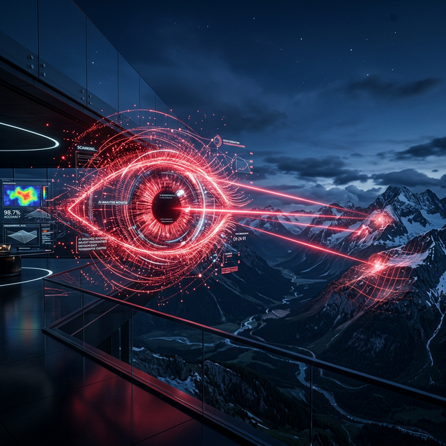

Standard LLMs hallucinate local contexts. By annotating millions of conversational nodes, we inject profound cultural and linguistic fluency directly into the core matrix.
Mapping the uncharted cognitive territory of South Asia.
Local Accuracy
The end-to-end proprietary protocol converting raw analog noise into pure intelligent structural data.
Massive scale scraping protocols isolating colloquial Urdu text and audio sets from unstructured public domains.
Algorithmic sanitation ensuring high signal-to-noise ratio, stripping anomalies before human intervention.

Precision tagging by local linguist experts, injecting ground-truth logic required for advanced reasoning tasks.